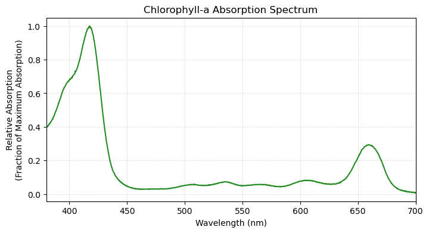
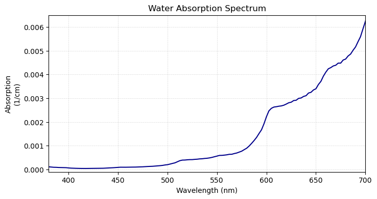

Chlorophyll-a#
This resource will be updated on 9/11.
import numpy as np
import matplotlib.pyplot as plt
Physical Basis#
The Chlorophyll-a Absorption Spectrum#
# read in the spectrum
spectrum = np.genfromtxt('../data/chla_absorption_spectrum.txt', delimiter='\t')
spectrum[:,1] *= 1/np.max(spectrum[:,1]) # normalize
# make a plot
fig = plt.figure(figsize=(8,4))
plt.plot(spectrum[:,0], spectrum[:,1], color='forestgreen')
plt.xlabel('Wavelength (nm)')
plt.ylabel('Relative Absorption\n(Fraction of Maximum Absorption)')
plt.grid(linestyle='--', linewidth=0.5, alpha=0.5)
plt.title('Chlorophyll-a Absorption Spectrum')
plt.gca().set_xlim([380,700])
plt.show()

The data from the above plot was obtained from Prahl and Jacques [2018].
The Water Absorption Spectrum#
We can compare the above plot of absorption for chlorophyll-a to that of water to visualize the differences:
# read in the spectrum
spectrum = np.genfromtxt('../data/water_absorption_spectrum.txt',delimiter='\t')
# make a plot
fig = plt.figure(figsize=(8,4))
plt.plot(spectrum[:,0], spectrum[:,1], color='darkblue')
plt.xlabel('Wavelength (nm)')
plt.ylabel('Absorption\n(1/cm)')
plt.grid(linestyle='--', linewidth=0.5, alpha=0.5)
plt.title('Water Absorption Spectrum')
plt.gca().set_xlim([380,700])
plt.gca().set_ylim([-0.0001,0.0065])
plt.show()
